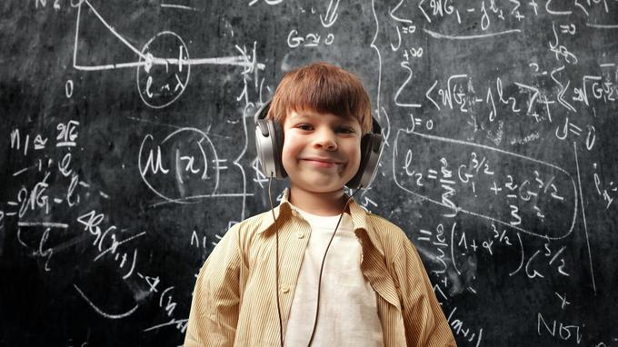

Depuis une vingtaine d'années, la musique est devenue l'un des sujets d'étude privilégiés des neuroscientifiques autour du globe. Et pour cause: ses effets sur les capacités d'apprentissage et sur la structuration du cerveau, notamment des enfants, sont uniques.
Premier constat des études scientifiques: le cerveau naît musical. En 2015, une équipe de chercheurs espagnols a publié dans la revue de la British Medical Society une étude sur l'apparition de la sensibilité musicale in utero. À l'écoute d'une «Petite musique de nuit» de Mozart, 87 % des bébés réagissent - mouvements des pieds et de la tête. Et 50 % produisent des gestes réguliers, comme s'ils battaient la mesure. Pourquoi est-ce important? Parce que la capacité des enfants à distinguer les consonances et les dissonances et à intégrer un rythme est à la racine de leur développement linguistique. De la musique, naît le langage.
Par son impact sur nos émotions, la musique fournit aussi aux enfants des stimulants dont on sait qu'ils sont essentiels pour apprendre mieux: le plaisir et la détente. «La musique ne mobilise pas seulement le cortex auditif primaire, mais également les régions sous-corticales où se modifient nos émotions et s'impulsent les états d'éveil et de plaisir, que traduit parfois le frisson à l'audition» explique Laure Ferreri, Maître de Conférences en psychologie cognitive à l'Université Lyon 2. Ce plaisir de l'écoute active une ressource cérébrale essentielle pour les apprentissages: le circuit mésolimbique de récompense, d'où se libère la fameuse dopamine, le neurotransmetteur de notre motivation.
Ecouter de la musique apporte déjà des bénéfices nombreux aux enfants. La pratiquer, même en amateur, est encore plus efficace.
Fédérer dès le plus jeune âge grâce à la musique
Dans l'orchestre, le chœur, la composition collective, chaque individualité compte pour atteindre le résultat collectif le plus mélodieux possible. Créer ensemble, apprendre à se connaître, à s'écouter et à écouter l'autre au sein d'un orchestre, d'une chorale, d'une pratique artistique collective, forge un sens du respect, de la solidarité et du partage.
Depuis leur création, les Fabriques à Musique - opération initiée par la Sacem en partenariat avec le Ministère de la Culture et de l'Education nationale - permettent aux élèves de découvrir le processus de création avec des auteurs - compositeurs en participant au travail d'écriture et de composition.
Plus de 13 200 élèves ont ainsi travaillé avec près de 450 auteurs et compositeurs. Sur tout le territoire français, plus de 160 projets aux univers variés (électro, chanson, musique à l'image, jazz, classique et contemporain) sont actuellement en cours.
Favoriser la connaissance des œuvres dans toute leur diversité, développer la pratique musicale, encourager la créativité, découvrir les métiers de la musique, sensibiliser au droit d'auteur sont autant de missions fondamentales de la Sacem. Depuis de nombreuses années, la Sacem œuvre sans relâche pour donner à la musique la place qui lui revient dans la vie des écoles, collèges et lycées de France. L'engouement autour du dispositif des Fabriques à Musique depuis 2015, témoigne de l'importance de replacer les enjeux de l'éducation artistique et culturelle au cœur du débat public» ajoute Jean-Noël Tronc, Directeur général- gérant de la Sacem.
Remettre la musique et le collectif au cœur du système éducatif
En France, la pratique de la musique et sa place dans les systèmes scolaires demeurent cantonnées à la marge des enseignements réputés «fondamentaux» comme le français et les mathématiques. Alors qu'il faudrait presque envisager un retournement complet de perspective, et faire de l'enseignement musical, à tous les niveaux de la vie scolaire, la clef de voûte des protocoles d'apprentissages. Dans les pays particulièrement performants du classement PISA (programme international pour le suivi des acquis des élèves), où la France se classe 26ème sur 70, il n'est d'ailleurs pas étonnant de voir aux premières places des pays où la pratique musicale fait partie intégrante de la vie des élèves. Singapour, où l'enseignement musical est obligatoire à l'école depuis 1968, e
t où on estime que plus de 80% des enfants jouent d'un instrument trône ainsi en première plac
e du classement. Suivi de l'Estonie, la Finlande, l'Australie ou encore le Royaume-Uni, tous pays où la musique occupe une place prépondérante dans la vie scolaire, via des cours, des orchestres et des chorales.
Certaines initiatives privées et publiques font avancer la place de la musique dans les classes. Ainsi l'opération Les Fabriques à Musique citées plus haut, ou le travail de l'association Orchestre à l'école qui vient de fêter ses 10 ans. Mais le défi reste celui de la généralisation et de l'accès égal de tous les enfants à une pratique musicale. Le «Plan Chorale» porté par le Ministère de l'Education Nationale, consistant à doter chaque établissement scolaire d'une chorale en 2019, répond à cette ambition. La pratique musicale en groupe facilite l'empathie, la collaboration entre individus, ainsi que l'organisation et la coordination. La chorale a également l'avantage d'être plus aisée et moins onéreuse à mettre en place qu'un orchestre.
Apprentissage, émotion, vivre-ensemble: la musique et le chant ont tout de ce gai-savoir qui fait souvent défaut dans nos approches éducatives. Souhaitons, pour 2019 et au-delà, que tous les enfants de France, leurs enseignants et leurs parents, fassent l'expérience de l'impact si positif de la musique dans leurs classes et dans leur vie!